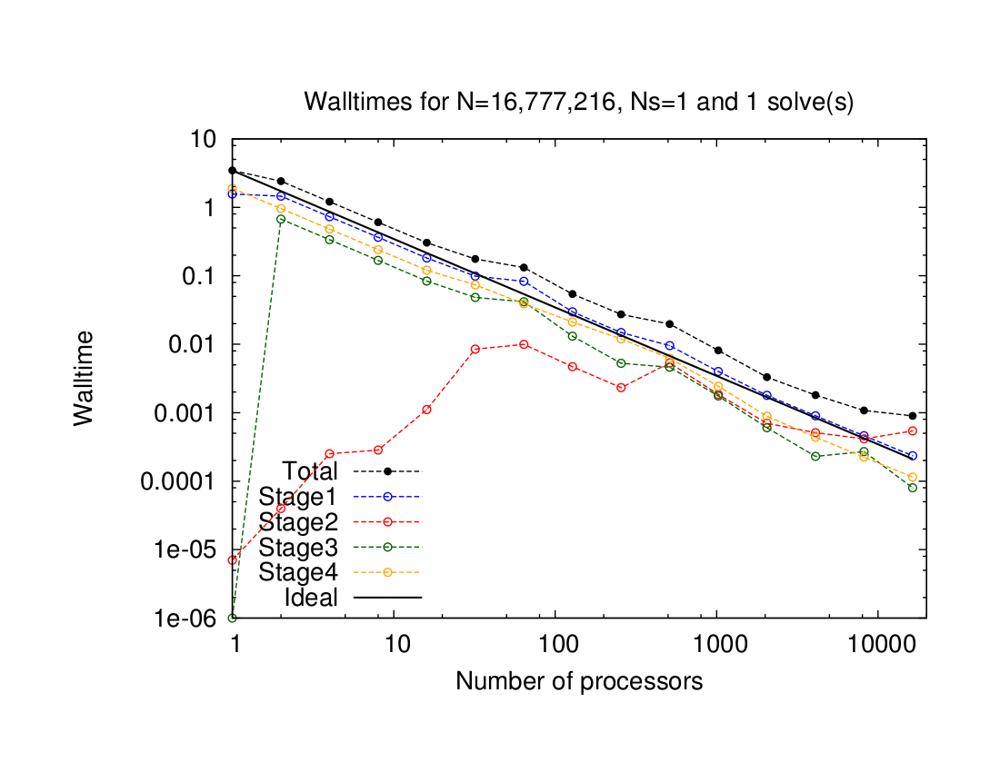

The following strong scalability results were obtained on Vesta (Blue Gene/Q) at the Argonne Leadership Computing Facility - 2048 nodes, each node has a 1600 Mhz PowerPC A2 processor with 16 cores (32,768 cores).
Note: The results here are most likely the "best possible". They were obtained when the number of other users of the cluster was minimal.
See documentation of tridiagLU() to understand what the stages refer to in the following plots. They are briefly summarized as follows:
- Stage 1: Independent elimination of interior points (perfectly scalable)
- Stage 2: Elimination of non-zeros created by stage 1 that leads to the formation of the reduced system (requires one one-way communication, followed by independent computations)
- Stage 3: Solution of the reduced system - the reduced system is of size nproc and each processor has one element of the system. Thus, this stage has a tight coupling between processors if solved directly.
- Stage 4: Independent back-substitution at the interior points (perfectly scalable)
- Total size of system: 1,048,576
- Number of systems: 1
- Number of solves for walltime measurement: 1
Scalable up to: ~512 processors
- Total size of system: 16,777,216
- Number of systems: 1
- Number of solves for walltime measurement: 1
Scalable up to: ~8,192 processors

- Total size of system: 268,435,456
- Number of systems: 1
- Number of solves for walltime measurement: 1
Scalable up to: >16,384 processors
Example: tridiagLU() with tridiagLUGS() (Gather-and-Solve method) for reduced systems
- Total size of system: 1,048,576
- Number of systems: 1
- Number of solves for walltime measurement: 1
Scalable up to: ~64 processors
- Total size of system: 16,777,216
- Number of systems: 1
- Number of solves for walltime measurement: 1
Scalable up to: ~1,024 processors
- Total size of system: 268,435,456
- Number of systems: 1
- Number of solves for walltime measurement: 1
Scalable up to: ~2,048 processors